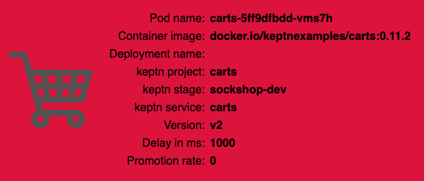

In this tutorial you'll get a full tour through Keptn. Before we get started you'll get to know what you will learn while you walk yourself through this tutorial.
What you'll learn
- How to create a sample project
- How to onboard a first microservice
- How to deploy your first microservice with blue/green deployments
- How to setup quality gates
- How to prevent bad builds of your microservice to reach production
- How to automatically roll back bad builds of your microservices
- How to integrate other tools like Slack, MS Team, etc in your Keptn integration
You'll find a time estimate until the end of this tutorial in the right top corner of your screen - this should give you guidance how much time is needed for each step.
Before you can get started, please make sure to have Keptn installed on your Kubernetes cluster.
If not, please follow one of these tutorials to install Keptn on your favourite Kubernetes distribution.
For enabling the Keptn Quality Gates, we are going to use Dynatrace as the data provider. Therefore, we are going to setup Dynatrace in our Kubernetes cluster to have our sample application monitored and we can use the monitoring data for both the basis for evaluating quality gates as well as a trigger to start self-healing.
If you don't have a Dynatrace tenant yet, sign up for a free trial or a developer account.
- Create a Dynatrace API TokenLog in to your Dynatrace tenant and go to Settings > Integration > Dynatrace API. Then, create a new API token with the following permissions:
- Access problem and event feed, metrics and topology
- Access logs
- Configure maintenance windows
- Read configuration
- Write configuration
- Capture request data
- Real user monitoring JavaScript tag management

- Create a Dynatrace PaaS TokenIn your Dynatrace tenant, go to Settings > Integration > Platform as a Service, and create a new PaaS Token.
- Store your credentials in a Kubernetes secret by executing the following command. The
DT_TENANThas to be set according to the appropriate pattern:- Dynatrace SaaS tenant (this format is most likely for you):
{your-environment-id}.live.dynatrace.com - Dynatrace-managed tenant:
{your-domain}/e/{your-environment-id}
kubectlcommand itself.
If you used the variables, the next command can be copied and pasted without modifications. If you have not set the variable, please make sure to set the right values in the next command.DT_TENANT=yourtenant.live.dynatrace.com DT_API_TOKEN=yourAPItoken DT_PAAS_TOKEN=yourPAAStokenkubectl -n keptn create secret generic dynatrace --from-literal="DT_TENANT=$DT_TENANT" --from-literal="DT_API_TOKEN=$DT_API_TOKEN" --from-literal="DT_PAAS_TOKEN=$DT_PAAS_TOKEN" - Dynatrace SaaS tenant (this format is most likely for you):
- The Dynatrace integration into Keptn is handled by the dynatrace-service. To install the dynatrace-service, execute:
kubectl apply -f https://raw.githubusercontent.com/keptn-contrib/dynatrace-service/0.7.1/deploy/manifests/dynatrace-service/dynatrace-service.yaml - When the service is deployed, use the following command to install Dynatrace on your cluster. If Dynatrace is already deployed, the current deployment of Dynatrace will not be modified.
keptn configure monitoring dynatrace
Verify Dynatrace configuration
Since Keptn has configured your Dynatrace tenant, let us take a look what has be done for you:
- Tagging rules: When you navigate to Settings > Tags > Automatically applied tags in your Dynatrace tenant, you will find following tagging rules:
- keptn_deployment
- keptn_project
- keptn_service
- keptn_stage
- Problem notification: A problem notification has been set up to inform Keptn of any problems with your services to allow auto-remediation. You can check the problem notification by navigating to Settings > Integration > Problem notifications and you will find a keptn remediation problem notification.
- Alerting profile: An alerting profile with all problems set to 0 minutes (immediate) is created. You can review this profile by navigating to Settings > Alerting > Alerting profiles.
- Dashboard and Mangement zone: When creating a new Keptn project or executing the keptn configure monitoring command for a particular project (see Note 1), a dashboard and management zone will be generated reflecting the environment as specified in the shipyard file.
Follow the next steps only if your Dynatrace OneAgent does not work properly.
- To check if the OneAgent does not work properly, the output of
kubectl get pods -n dynatracemight look as follows:NAME READY STATUS RESTARTS AGE dynatrace-oneagent-operator-7f477bf78d-dgwb6 1/1 Running 0 8m21s oneagent-b22m4 0/1 Error 6 8m15s oneagent-k7jn6 0/1 CrashLoopBackOff 6 8m15s - This means that after the initial setup you need to edit the OneAgent custom resource in the Dynatrace namespace and add the following entry to the env section:
env: - name: ONEAGENT_ENABLE_VOLUME_STORAGE value: "true" - To edit the OneAgent custom resource:
kubectl edit oneagent -n dynatrace
At the end of your installation, please verify that all Dynatrace resources are in a Ready and Running status by executing kubectl get pods -n dynatrace:
NAME READY STATUS RESTARTS AGE
dynatrace-oneagent-operator-7f477bf78d-dgwb6 1/1 Running 0 8m21s
oneagent-b22m4 1/1 Running 0 8m21s
oneagent-k7jn6 1/1 Running 0 8m21s
A project in Keptn is the logical unit that can hold multiple (micro)services. Therefore, it is the starting point for each Keptn installation.
To get all files you need for this tutorial, please clone the example repo to your local machine.
git clone --branch release-0.6.2 https://github.com/keptn/examples.git --single-branch
cd examples/onboarding-carts
Create a new project for your services using the keptn create project command. In this example, the project is called sockshop. Before executing the following command, make sure you are in the examples/onboarding-carts folder.
Create a new project with Git upstream:
To configure a Git upstream for this tutorial, the Git user (--git-user), an access token (--git-token), and the remote URL (--git-remote-url) are required. If a requirement is not met, go to the Keptn documentation where instructions for GitHub, GitLab, and Bitbucket are provided.
keptn create project sockshop --shipyard=./shipyard.yaml --git-user=GIT_USER --git-token=GIT_TOKEN --git-remote-url=GIT_REMOTE_URL
Alternatively: If you don't want to use a Git upstream, you can create a new project without it:
keptn create project sockshop --shipyard=./shipyard.yaml
For creating the project, the tutorial relies on a shipyard.yaml file as shown below:
stages:
- name: "dev"
deployment_strategy: "direct"
test_strategy: "functional"
- name: "staging"
deployment_strategy: "blue_green_service"
test_strategy: "performance"
- name: "production"
deployment_strategy: "blue_green_service"
remediation_strategy: "automated"
This shipyard contains three stages: dev, staging, and production. This results in the three Kubernetes namespaces: sockshop-dev, sockshop-staging, and sockshop-production.
- dev will have a direct (big bang) deployment strategy and functional tests are executed
- staging will have a blue/green deployment strategy and performance tests are executed
- production will have a blue/green deployment strategy without any further testing. The configured remediation strategy is used for self-healing in production.
After creating the project, services can be onboarded to our project.
- Onboard the carts service using the keptn onboard service command:
keptn onboard service carts --project=sockshop --chart=./carts - After onboarding the service, tests (i.e., functional- and performance tests) need to be added as basis for quality gates in the different stages:
- Functional tests for dev stage:
keptn add-resource --project=sockshop --stage=dev --service=carts --resource=jmeter/basiccheck.jmx --resourceUri=jmeter/basiccheck.jmx - Performance tests for staging stage:
keptn add-resource --project=sockshop --stage=staging --service=carts --resource=jmeter/load.jmx --resourceUri=jmeter/load.jmx
basiccheck.jmxas well asload.jmxfor your service. However, you must not rename the files because there is a hardcoded dependency on these file names in the current implementation of Keptn's jmeter-service. - Functional tests for dev stage:
Since the carts service requires a mongodb database, a second service needs to be onboarded.
- Onboard the carts-db service using the keptn onboard service command. The
--deployment-strategyflag specifies that for this service a direct deployment strategy in all stages should be used regardless of the deployment strategy specified in the shipyard. Thus, the database is not blue/green deployed.keptn onboard service carts-db --project=sockshop --chart=./carts-db --deployment-strategy=direct
After onboarding the services, a built artifact of each service can be deployed.
- Deploy the carts-db service by executing the keptn send event new-artifact command:
keptn send event new-artifact --project=sockshop --service=carts-db --image=docker.io/mongo --tag=4.2.2 - Deploy the carts service by specifying the built artifact, which is stored on DockerHub and tagged with version 0.11.1:
keptn send event new-artifact --project=sockshop --service=carts --image=docker.io/keptnexamples/carts --tag=0.11.1 - Go to Keptn's Bridge and check which events have already been generated. You can access it by a port-forward from your local machine to the Kubernetes cluster:
kubectl port-forward svc/bridge -n keptn 9000:8080 - The Keptn's Bridge is then available on http://localhost:9000.
It shows all deployments that have been triggered. On the left-hand side, you can see the deployment start events (i.e., so-calledConfiguration changeevents). During a deployment, Keptn generates events for controlling the deployment process. These events will also show up in Keptn's Bridge. Please note that if events are sent at the same time, their order in the Keptn's Bridge might be arbitrary since they are sorted on the granularity of one second.
- Optional: Verify the pods that should have been created for services carts and carts-db:
kubectl get pods --all-namespaces | grep cartssockshop-dev carts-77dfdc664b-25b74 1/1 Running 0 10m sockshop-dev carts-db-54d9b6775-lmhf6 1/1 Running 0 13m sockshop-production carts-db-54d9b6775-4hlwn 2/2 Running 0 12m sockshop-production carts-primary-79bcc7c99f-bwdhg 2/2 Running 0 2m15s sockshop-staging carts-db-54d9b6775-rm8rw 2/2 Running 0 12m sockshop-staging carts-primary-79bcc7c99f-mbbgq 2/2 Running 0 7m24s
- Get the URL for your carts service with the following commands in the respective namespaces:
echo http://carts.sockshop-dev.$(kubectl get cm keptn-domain -n keptn -o=jsonpath='{.data.app_domain}')echo http://carts.sockshop-staging.$(kubectl get cm keptn-domain -n keptn -o=jsonpath='{.data.app_domain}')echo http://carts.sockshop-production.$(kubectl get cm keptn-domain -n keptn -o=jsonpath='{.data.app_domain}') - Navigate to the URLs to inspect the carts service. In the production namespace, you should receive an output similar to this:

Now that the service is running in all three stages, let us generate some traffic so we have some data we can base the evaluation on.
Change the directory to examples/load-generation/cartsloadgen. If you are still in the onboarding-carts directory, use the following command or change it accordingly:
cd ../load-generation/cartsloadgen
Now let us deploy a pod that will generate some traffic for all three stages of our demo environment.
kubectl apply -f deploy/cartsloadgen-base.yaml
The output will look similar to this.
namespace/loadgen created
deployment.extensions/cartsloadgen created
Optionally, you can verify that the load generator has been started.
kubectl get pods -n loadgen
NAME READY STATUS RESTARTS AGE
cartsloadgen-5dc47c85cf-kqggb 1/1 Running 0 117s
During the evaluation of a quality gate, the Dynatrace SLI provider is required that is implemented by an internal Keptn service, the dynatrace-sli-service. This service will fetch the values for the SLIs that are referenced in an SLO configuration.
kubectl apply -f https://raw.githubusercontent.com/keptn-contrib/dynatrace-sli-service/0.4.1/deploy/service.yaml
Configure the already onboarded project with the new SLI provider:
keptn configure monitoring dynatrace --project=sockshop
Keptn requires a performance specification for the quality gate. This specification is described in a file called slo.yaml, which specifies a Service Level Objective (SLO) that should be met by a service. To learn more about the slo.yaml file, go to Specifications for Site Reliability Engineering with Keptn.
Activate the quality gates for the carts service. Therefore, navigate to the examples/onboarding-carts folder and upload the slo-quality-gates.yaml file using the add-resource command:
Make sure you are in the correct folder examples/onboarding-carts. If not, change the directory accordingly, e.g., cd ../../onboarding-carts.
keptn add-resource --project=sockshop --stage=staging --service=carts --resource=slo-quality-gates.yaml --resourceUri=slo.yaml
This will add the SLO.yaml file to your Keptn - which is the declaritive definition of a quality gate. Let's take a look at the file contents:
---
spec_version: "0.1.1"
comparison:
aggregate_function: "avg"
compare_with: "single_result"
include_result_with_score: "pass"
number_of_comparison_results: 1
filter:
objectives:
- sli: "response_time_p95"
key_sli: false
pass: # pass if (relative change <= 10% AND absolute value is < 600ms)
- criteria:
- "<=+10%" # relative values require a prefixed sign (plus or minus)
- "<600" # absolute values only require a logical operator
warning: # if the response time is below 800ms, the result should be a warning
- criteria:
- "<=800"
weight: 1
total_score:
pass: "90%"
warning: "75%"
You can take a look at the currently deployed version of our "carts" microservice before we deploy the next build of our microservice.
- Get the URL for your carts service with the following commands in the respective stages:
echo http://carts.sockshop-dev.$(kubectl get cm keptn-domain -n keptn -o=jsonpath='{.data.app_domain}')echo http://carts.sockshop-staging.$(kubectl get cm keptn-domain -n keptn -o=jsonpath='{.data.app_domain}')echo http://carts.sockshop-production.$(kubectl get cm keptn-domain -n keptn -o=jsonpath='{.data.app_domain}') - Navigate to
http://carts.sockshop-production.YOUR.DOMAINfor viewing the carts service in your production environment and you should receive an output similar to the following:
- Use the Keptn CLI to deploy a version of the carts service, which contains an artificial slowdown of 1 second in each request.
keptn send event new-artifact --project=sockshop --service=carts --image=docker.io/keptnexamples/carts --tag=0.11.2 - Go ahead and verify that the slow build has reached your
devandstagingenvironments by opening a browser for both environments. Get the URLs with these commands:echo http://carts.sockshop-dev.$(kubectl get cm keptn-domain -n keptn -o=jsonpath='{.data.app_domain}')echo http://carts.sockshop-staging.$(kubectl get cm keptn-domain -n keptn -o=jsonpath='{.data.app_domain}')


After triggering the deployment of the carts service in version v0.11.2, the following status is expected:
- Dev stage: The new version is deployed in the dev stage and the functional tests passed.
- To verify, open a browser and navigate to:
echo http://carts.sockshop-dev.$(kubectl get cm keptn-domain -n keptn -o=jsonpath='{.data.app_domain}')
- To verify, open a browser and navigate to:
- Staging stage: In this stage, version v0.11.2 will be deployed and the performance test starts to run for about 10 minutes. After the test is completed, Keptn triggers the test evaluation and identifies the slowdown. Consequently, a roll-back to version v0.11.1 in this stage is conducted and the promotion to production is not triggered.
- To verify, the Keptn's Bridge shows the deployment of v0.11.2 and then the failed test in staging including the roll-back.
Open the browser tab with the Keptn's Bridge and verify yourself: http://localhost:9000
- To verify, the Keptn's Bridge shows the deployment of v0.11.2 and then the failed test in staging including the roll-back.
- Production stage: The slow version is not promoted to the production stage because of the active quality gate in place. Thus, still version v0.11.1 is expected to be in production.
- To verify, navigate to:
echo http://carts.sockshop-production.$(kubectl get cm keptn-domain -n keptn -o=jsonpath='{.data.app_domain}')
- To verify, navigate to:
Take a look in the Keptn's bridge (that you opened earlier in this tutorial) and navigate to the last deployment. You will find a quality gate evaluation that got a fail result when evaluation the SLOs of our carts microservice. Thanks to this quality gate the slow build won't be promoted to production but instead automatically rolled back.

- Use the Keptn CLI to send a new version of the carts artifact, which does not contain any slowdown:
keptn send event new-artifact --project=sockshop --service=carts --image=docker.io/keptnexamples/carts --tag=0.11.3 - To verify the deployment in production (it may take a couple of minutes), open a browser and navigate to the carts service in your production environment. As a result, you see
Version: v3. - Besides, you can verify the deployments in your Kubernetes cluster using the following commands:
kubectl get deployments -n sockshop-productionNAME DESIRED CURRENT UP-TO-DATE AVAILABLE AGE carts-db 1 1 1 1 63m carts-primary 1 1 1 1 98mkubectl describe deployment carts-primary -n sockshop-production... Pod Template: Labels: app=carts-primary Containers: carts: Image: docker.io/keptnexamples/carts:0.11.3
Next, you will learn how to use the capabilities of Keptn to provide self-healing for an application with feature flags based on the Unleash feature toggle framework.
To quickly get an Unleash server up and running with Keptn, follow these instructions:
- Make sure you are in the correct folder of your examples directory:
cd examples/unleash-server - Create a new project using the
keptn create projectcommand:keptn create project unleash --shipyard=./shipyard.yaml - Onboard unleash and unleash-db using the
keptn onboard servicecommand:keptn onboard service unleash-db --project=unleash --chart=./unleash-db keptn onboard service unleash --project=unleash --chart=./unleash - Send new artifacts for unleash and unleash-db using the
keptn send new-artifactcommand:keptn send event new-artifact --project=unleash --service=unleash-db --image=postgres:10.4 keptn send event new-artifact --project=unleash --service=unleash --image=docker.io/keptnexamples/unleash:1.0.0 - Get the URL (
unleash.unleash-dev.KEPTN_DOMAIN):echo http://unleash.unleash-dev.$(kubectl get cm keptn-domain -n keptn -o=jsonpath='{.data.app_domain}') - Open the URL in your browser and log in using the following credentials:
- Username: keptn
- Password: keptn
You should be able to login using the credentials keptn/keptn.
In this tutorial, we are going to introduce feature toggles for two scenarios:
- Feature flag for a very simple caching mechanism that can speed up the delivery of the website since it skips the calls to the database but instead replies with static content.
- Feature flag for a promotional campaign that can be enabled whenever you want to run a promotional campaign on top of your shopping cart.
To set up both feature flags, navigate to your Unleash server and log in.
- Click on the red + to add a new feature toggle.

- Name the feature toggle EnableItemCache and add carts in the description field.

- Create another feature toggle by following the same procedure and by naming it the feature toggle EnablePromotion and by adding carts in the description field.

Now, everything is set up in the Unleash server. For Keptn to be able to connect to the Unleash server, we have to add a secret with the Unleash API URL as well as the Unleash tokens.
- In order for Keptn to be able to use the Unleash API, we need to add the credentials as a secret to our Keptn namespace. In this tutorial, we do not have to change the values for UNLEASH_SERVER, UNLEASH_USER, and UNLEASH_TOKEN, but in your own custom scenario this might be needed to change it to your actual Unleash URL, user and token.
As said, in this tutorial we can use the following command as it is:kubectl -n keptn create secret generic unleash --from-literal="UNLEASH_SERVER_URL=http://unleash.unleash-dev/api" --from-literal="UNLEASH_USER=keptn" --from-literal="UNLEASH_TOKEN=keptn" - Keptn has to be aware of the new secret to connect to the Unleash server and to set the feature toggles. Therefore, the remediation-service must be restarted:
kubectl delete pod -l=run=remediation-service -n keptn - Finally, switch to the carts example (
cd examples/onboarding-carts) and add the following remediation instructions
using the command:remediations: - name: "Response time degradation" actions: - action: featuretoggle value: EnableItemCache:on - name: "Failure rate increase" actions: - action: featuretoggle value: EnablePromotion:off
Note: The file describes remediation actions (e.g.,keptn add-resource --project=sockshop --service=carts --stage=production --resource=remediation_feature_toggle.yaml --resourceUri=remediation.yamlfeaturetoggle) in response to problems/alerts (e.g.,Response time degradation) that are sent to Keptn.
Now that everything is set up, next we are going to hit the application with some load and toggle the feature flags.
- In this tutorial, we are going to turn on the promotional campaign, which purpose is to add promotional gifts to about 30 % of the user interactions that put items in their shopping cart.
- Click on the toggle next to EnablePromotion to enable this feature flag.

- By enabling this feature flag, a not implemented function is called resulting in a NotImplementedFunction error in the source code and a failed response. After a couple of minutes, the monitoring tool will detect an increase in the failure rate and will send out a problem notification to Keptn.
- Keptn will receive the problem notification/alert and look for a remediation action that matches this problem. Since we have added the
remediation.yamlbefore, Keptn will find a remediation action and will trigger the corresponding action that will disable the feature flag. - Finally, take a look into the Keptn's Bridge to see that an open problem has been resolved:

Thanks for taking a full tour through Keptn!
Although Keptn has even more to offer that should have given you a good overview what you can do with Keptn.
What we've covered
- We have created a sample project with the Keptn CLI and set up a multi-stage delivery pipeline with the
shipyardfile.stages: - name: "dev" deployment_strategy: "direct" test_strategy: "functional" - name: "staging" deployment_strategy: "blue_green_service" test_strategy: "performance" - name: "production" deployment_strategy: "blue_green_service" remediation_strategy: "automated" - We have set up quality gates based on service level objectives in our
slofile.--- spec_version: "0.1.1" comparison: aggregate_function: "avg" compare_with: "single_result" include_result_with_score: "pass" number_of_comparison_results: 1 filter: objectives: - sli: "response_time_p95" key_sli: false pass: # pass if (relative change <= 10% AND absolute value is < 600ms) - criteria: - "<=+10%" # relative values require a prefixed sign (plus or minus) - "<600" # absolute values only require a logical operator warning: # if the response time is below 800ms, the result should be a warning - criteria: - "<=800" weight: 1 total_score: pass: "90%" warning: "75%" - We have tested our quality gates by deploying a bad build to our cluster and verified that Keptn quality gates stopped them.
- We have set up self-healing by automated toggling of feature flags in Unleash.

Keptn can be easily extended with external tools such as notification tools, other SLI providers, bots to interact with Keptn, etc.
While we do not cover additional integrations in this tutorial, please feel fee to take a look at our integration repositories:
- Keptn Contrib lists mature Keptn integrations that you can use for your Keptn installation
- Keptn Sandbox collects mostly new integrations and those that are currently under development - however, you can also find useful integrations here.
Please visit us in our Keptn Slack and tell us how you like Keptn and this tutorial! We are happy to hear your thoughts & suggestions!
Also, please follow us on Twitter to get the latest news on Keptn, our tutorials and newest releases!